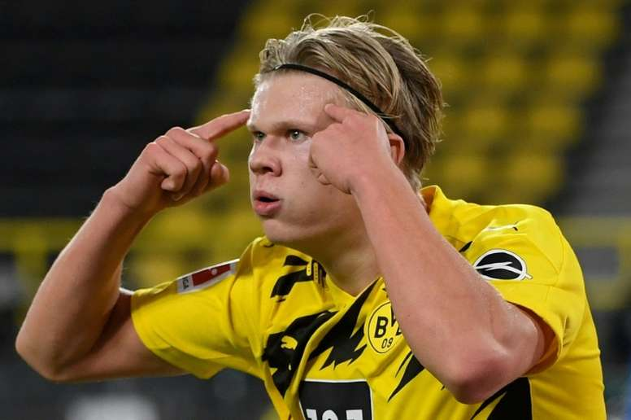

Haalandis a striker that all Europe is paying attention to. Holland, which is showing a monstrous scoring ability, is receiving a big club's love call. While Real Madrid, Barcelona, Man City and Chelsea are watching, Manchester United, who need a clear striker, are also watching Holland. Manchester United have predicted Holland as their top priority this summer and are ready to jump in.

However, the father of Holland and former Manchester City player Alf Ying-e-Holland has been negative about the trend. In an interview with the Manchester Evening News on the 29th (Korea time), "It is not easy to compare with Manchester United. Because Holland is already playing for Dortmund. Manchester United and Dortmund are big clubs with big supporters and huge history. "U.K. is a German national. It's a very proud club like Dortmund." It was a nuance that I didn't think going from Dortmund to Manchester United was a big leap forward.